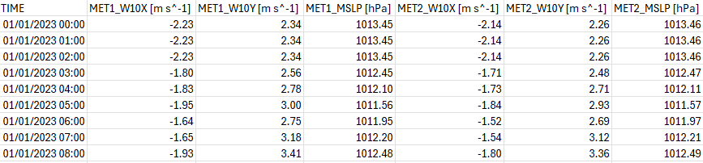

5.18 Model Output
5.18.2 Description
TUFLOW FV supports a range of output types and formats to enable review and presentation of model results. Results may be output at discrete locations such as points, hydraulic structures and polyline cross-sections, or across the full model mesh for spatial mapping and visualisation. This section describes the available 2D HD simulation class output types including configuration of output blocks, spatial definition of output locations and assignment of output parameters.
Model outputs are configured using the following process.
- Select the required output type(s) (Section 5.18.2.1)
- Define the directory where output(s) are to be saved (Section 5.18.2.2)
- For each output type create an output block (Section 5.18.2.3)
- Define the spatial output locations and configure the block for the selected output type (Sections 5.18.4 to 5.18.7)
Guidance for viewing of results is provided as part of the TUFLOW eLearning resource. Instructions for accessing this resource are provided in Section 5.2.
5.18.2.1 Output Model Implementations
The output model implementations for the 2D HD simulation class are summarised in Table 5.73. Each output type is described with configuration examples in the following sub-sections. Restart file output is configured using standalone restart commands and is described separately in Section 5.18.10.
| Ouptut Type | Description |
|---|---|
| Mesh | Mesh output at all model cells. Also commonly refered to as ‘map output’ or ‘sheet output’. |
| Point | Cell output defined at discrete point locations. |
| Polyline | Flow integrated across discrete polylines (nodestrings). |
| Structure | Flow through hydraulic structures. |
| Mass Balance | Calculated model mass conservation outputs. |
| Mass | Total model volume output. It is a subset of the mass balance output and may be used if only total water volume diagnostic output is required. |
| Transport File | Writes a NetCDF file containing depth and velocity fields. This output file can subsequently be read in an advection dispersion simulation class model as a transport boundary condition. |
| Restart File | Write a binary output file that saves hydrodynamic variables that can be used as initial condition for a subsequent simulation. |
5.18.2.2 Output Directories
Output files are written to directories defined by the user as listed in Table 5.74. These directory commands only need to be specified once in the control file and apply to all output blocks unless redefined later in the file.
| Command | Description |
|---|---|
| Output Dir | Required - Defines the directory where model results are saved. ‘Output Folder’ is also accepted. |
| Log Dir | Optional - Sets the model log directory. |
| Write Check Files | Optional - Writes model GIS check files to the specified directory. |
5.18.2.3 Output Block
An output block defines the type and configuration of model result outputs.
The general form is:
Where:
Output == indicates the start of an output block- output_format is a keyword selecting the output type or file format. The available output formats for each output type are defined in Sections 5.18.4 to 5.18.9
- output_block_commands are any commands that reside within the output block and are used to configure the output
End Output closes the output block
The available 2D HD simulation class output block commands are described in Table 5.75.
| Command | Description |
|---|---|
| Output | Required - Defines the beginning of the output block and the result output format. |
| Output Interval | Required - The default (0.0 s, every model timestep) should be overridden for general use. |
| Output Parameters | Conditional - Required for points and mesh output types. Sets the model result output, for example water level, depth, velocity etc. |
| Read GIS PO | Conditional - Required for points model output. GIS layer that contains the location of the points. |
| Start Output | Optional - Defines the start time of the model output. If not specified, uses the model Start Time. |
| Final Output | Optional - Defines the final output time of the model output. If not specified, uses the model End Time. |
| Suffix | Optional - Enables multiple results of the same output format to be saved from the same simulation. Appends the suffix onto the result file name to ensure each result file name is unique. |
| Exact Timestep | Optional - Outputs the result at the exact computational timestep. |
| Output Compression | Optional - Enable or disable file compression for outputs in NetCDF file format (NetCDF, Transport, Profile). |
| Output Statistics | Optional - Track minimum or maximum map output values on a user-specifed Output Statistics dt. |
| Output Statistics dt | Optional - Sets the interval to track map output statistics. |
| End Output | Required - Defines the end of an output block. |
5.18.2.3.1 Output Parameters
Map output parameters are model variables or diagnostic model results such as water level or flow velocity. Table 5.76 lists the available
| Ouptut Parameter | Description | Units (Metric,Imperial) |
|---|---|---|
| H | Water surface elevation. | mRL, ftRL |
| D | Water depth. | m, ft |
| V | Velocity vector and magnitude. | m/s, ft/s |
| VMAG | Velocity magnitude only. | m/s, ft/s |
| TAUB | Bed shear stress. | N/m2, lbf/ft2 |
| TAUS | Surface shear stress. | N/m2, lbf/ft2 |
| ZB | Cell centre bed elevation. | mRL, ftRL |
| Z0 | Depth x velocity product. | m2/s,ft2/s |
| HAZARD_Z1 | Hazard catergories as outlined in the Australian NSW Floodplain Management Manual. | NA |
| HAZARD_ZAEM1 | Hazard categories as outlined by Australian Emergency Management Institute. | NA |
| HAZARD_ZQRA | Hazard categories as outlined for the Queensland Reconstruction Authority. | NA |
| MSLP | Mean sea level pressure (hPa). | hPa, NA |
| W10 | 10 m wind speed vector (m/s). | m/s, NA |
| PRECIP | Precipitation rate (m/day). | m/day, NA |
| WVHT | Significant wave height (m). | m, NA |
| WVPER | Peak wave period. | s, NA |
| WVDIR | Mean wave direction. | degrees cartesian, NA |
| WVSTR | Wave stress vector. | N/m2, NA |
| TURB_VISC | Turbulent eddy viscosity. | m2/s,ft2/s |
5.18.3 Mesh
Mesh outputs contain result output at every cell in the model. Mesh outputs are commonly used for statistical analysis, mapping, result checking and visualisation. The general process for specifying mesh output is as follows.
- Choose a mesh output format from Table 5.77
- Configure one or more output blocks
- Select from the output parameters as listed in Section 5.18.2.3.1
- Configure the output block with the required output interval
- Optionally include statistics tracking Section 5.18.3.1
Examples for each recommended mesh output format are provided below.
| Ouptut Format | Description |
|---|---|
| NetCDF | Recommended for use with the QGIS TUFLOW Plugin. Supported by the TUFLOW FV Python Toolbox, and TUFLOW FV MATLAB Toolbox. |
| XMDF | Recommended for use with Aquaveo SMS. |

Figure 5.22: Depth Output With Overlaid Velocity Vectors
Example (NetCDF mesh output format).
Example (XMDF mesh output format).
5.18.3.1 Statistics
The
More advanced statistical analysis is available via the TUFLOW FV Python Toolbox and TUFLOW FV MATLAB Toolbox.


Figure 5.23: Maximum velocity over time
Example (NetCDF mesh output format with statistics).
Example (XMDF mesh output format with statistics).
5.18.4 Point
The point output type generates comma delimited text file (.csv) timeseries at discrete cell centre locations. One or more points may be reported within a single simulation.
Output .csv files are written to the
Output point locations are defined using GIS layers read by the
| Attribute Name(s) | Description | Type |
|---|---|---|
| Type | Reserved for future use (Not used) | Character |
| Label | Name of the point. | Character |
| Comment | Optional user comment. | Character |
| Vert_min | 3D Vertical averaging override. Not applicable to the 2D HD simulation class. | Float |
| Ver_max | 3D Vertical averaging override. Not applicable to the 2D HD simulation class. | Float |

Figure 5.24: Point Output Locations
The point output type is specified by setting the first argument in the output block to points. Configuration requires specifying the output interval and the desired output parameters. Supported output parameters and their units are provided in Table 5.76.
Two examples output blocks are shown below. The first reports water level, depth, and velocity at the ADCP points, resulting in the output shown in Figure 5.25. The second reports wind speed and mean sea level pressure at the meteorological logger points, resulting in the output shown in Figure 5.26.

Figure 5.25: Point Output Timeseries From CC_001_POINTS.csv

Figure 5.26: Point Output Timeseries From CC_001_POINTS_MET.csv
5.18.5 Polyline
The polyline output type (also referred to as flux output) generates comma delimited (.csv) timeseries of net flow across each nodestring feature in the model. This includes nodestrings associated with open boundary definition, hydraulic structure connections and user defined monitoring locations.
Output files are written to the
Polyline output locations (Figure 5.27) are defined using the
Polyline timeseries output is specified by setting

Figure 5.27: Polyline Output Locations
| Output | Description | Units (Metric,US Customary) |
|---|---|---|
| FLOW | Net flow across the nodestring. | m3/s, ft3/s |

Figure 5.28: Net Flow Timeseries From CC_001_FLUX.csv
5.18.6 Structure
The structure output type (also referred to as structflux output) generates comma delimited (.csv) timeseries of flow (in units of \(m^3/s\) or \(ft^3/s\)) through hydraulic structures.
Output files are written to the
If the
There is no need to specify output parameters for structflux output, all relevant outputs are automatically generated (see Table 5.80). )
| Output | Description | Units (Metric,US Customary) |
|---|---|---|
| FLOW | Flow through the structure. | m3/s, ft3/s |

Figure 5.29: Structure Flow Timeseries From CC_001_STRUCTFLUX.csv
5.18.7 Mass Balance
Mass balance output generates comma delimited (.csv) time series of accumulated fluxes and balance diagnostics for each simulated quantity for commonly used boundary conditions. These outputs are useful for checking domain scale conservation and understanding system turnover dynamics. Mass balance output is not supported when using the Cartesian (US Customary Units) coordinate reference frame implementation.
Output files are written to the <fvc_name>_MASSBALANCE_<quantity_name>.csv. For example, the volume balance file for River_001.fvc is River_001_MASSBALANCE_VOLUME.csv.
There is no need to specify output parameters for mass balance output. The key outputs reported for each quantity are summarised in Table B.4.
Output csv header code definitions, units, and interpretation guidance are provided in Appendix B.11.1.
5.18.8 Mass
Mass output tracks the water volume, mass and potential energy in the model. There is no need to specify output parameters for mass output. Mass output is not supported when using the Cartesian (US Customary Units) coordinate reference frame implementation.
| Output | Description | Units (Metric only ) |
|---|---|---|
| Volume | Total water volume in the model. | m3 |
| Water Mass | Total water mass in the model. | tonnes |
| Potential Energy | Total potential energy in the model. | GJ |
5.18.9 Transport File
Transport files are generated from an existing 2D TUFLOW FV simulation as model output. The file stores hydrodynamic state variables and may subsequently be read in a new simulation to provide prescribed hydrodynamic forcing.
Transport output stores cell volume (depth) and depth averaged momentum components (X-momentum and Y-momentum) at a user defined interval. These fields may later be read using a Transport boundary condition within an Advection Dispersion simulation (See Section 7.11.10).
This workflow is commonly applied where multiple tracer, sediment transport, particle tracking or water quality scenarios are run using identical hydrodynamic conditions.
5.18.10 Restart File
Restart files are written from a 2D HD simulation to store the hydrodynamic state variables required to resume a 2D HD simulation. The file may subsequently be read by a new simulation to initialise water level, depth and momentum fields, enabling continuation of a previous run or staged model workflows. The reading of restart files as initial conditions is described in Section 5.15.5.
Restart files are written using standalone restart commands. Unlike other model outputs, restart files are not configured within an Output Block.
The standalone restart commands are listed in Table 5.82.
| Command | Description |
|---|---|
| Write Restart dt | Optional - Writes a restart file (.rst) to the log directory location at the time interval specified. |
| Restart Overwrite |
Optional - Switch to overwrite the restart file at the time interval specified using the |
The example below specifies periodic writing of restart data.
5.18.11 Checks and Logs
Several diagnostic style outputs are produced by TUFLOW FV to assist in debugging and simulation optimisation.
5.18.11.1 Check Files
Check files are written when the
These files are GIS vector files and summarise the mesh, nodestings, boundary conditions, z line and sa inputs. One file is produced for each and presents the sum total of all specifications or manipulations applied to a simulation across one to many commands. For example, a boundary condition check file will show all the locations of boundary conditions in one file, irrespective of how many BC block commands have been issued.
Check files are described, and their attributed explained, within a dedicated TUFLOW FV Wiki page.
5.18.11.2 Log File
A log file is written when the
This file echoes the .fvc and provides error messaging, timestep related information and other diagnostic data. This file is therefore important for identifying data input issues and troubleshooting the model.
5.18.11.3 Timestep Files
Files that describe the overall CFL behaviour of each cell face are written at the end of each simulation, in the same location as the log file. These are useful in quickly identifying which cell faces (if any) are potentially unnecessarily slowing down simulations (i.e. are reducing the overall simulation timestep to meet CFL conditions, see Section 5.7 and Appendix B.4.5). These often occur in locations with small cells that may have been accidentally built. One csv file is produced for each of the internal and external CFL performance, and average and minimum timestep information for each cell face is provided. Faces that are constraining the timestep can be easily identified by sorting the output csvs in a spreadsheet application - the smallest timesteps will be at the top (or bottom) of the sorted list, alongside the corresponding cell face ID and geospatial coordinates.
Guidance on interrogating these files is provided within a dedicated TUFLOW FV Wiki page.